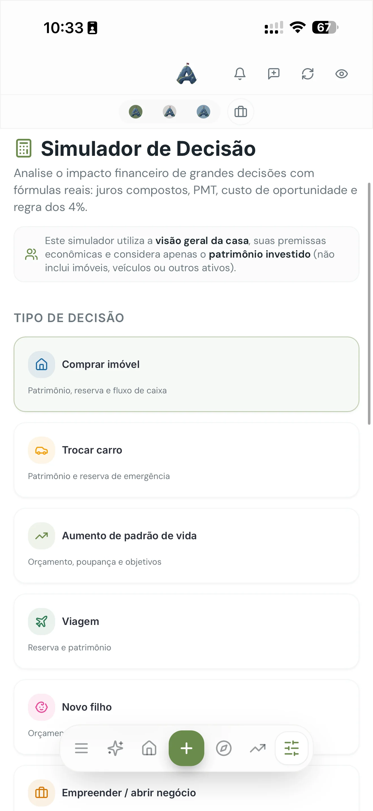

Poucos termos financeiros foram tão distorcidos quanto "renda passiva". A internet vende a imagem de alguém numa rede recebendo notificação de depósito, e isso faz muita gente desistir antes de começar — porque parece coisa de outro mundo. A realidade é bem menos glamourosa e bem mais alcançável: renda passiva é o que acontece quando dinheiro guardado começa a trabalhar no seu lugar. Não é mágica, é acúmulo.
Este texto faz parte do nosso guia de planejamento financeiro pessoal, na etapa em que o dinheiro guardado passa a gerar renda.
O que é renda passiva (e o que não é)
Renda passiva é qualquer entrada de dinheiro que não depende de você trocar horas por reais naquele mês. Os exemplos legítimos são poucos e conhecidos:
- Juros de renda fixa: Tesouro Direto, CDBs, LCIs e LCAs que pagam rendimento periódico.
- Dividendos de ações: parte do lucro que empresas distribuem aos acionistas.
- Fundos imobiliários (FIIs): rendimentos mensais vindos de aluguéis de imóveis, sem você administrar nada.
- Aluguel de imóvel próprio: o mais tradicional — e o menos passivo da lista, porque envolve vacância, reforma e inquilino.
- Royalties e produtos digitais: um livro, um curso, uma licença. Exige trabalho pesado antes, não depois.
E o que não é renda passiva: revenda, dropshipping, freelas, marketing de rede e qualquer coisa que pare de pagar assim que você parar de operar. Isso é um segundo trabalho — que pode ser ótimo, mas é outra conversa.
A regra que ninguém gosta de ouvir: toda renda passiva exige capital ou esforço acumulado antes. Se alguém oferece renda sem nenhum dos dois, você não é o investidor — você é o produto.
Quanto é preciso para viver disso
Existe uma conta simples e honesta: multiplique por 300 a renda mensal que você quer. Isso equivale a retirar cerca de 4% do patrimônio por ano, um ritmo que historicamente permite que o dinheiro dure décadas sem acabar.
- R$1.000 por mês → cerca de R$300 mil investidos
- R$3.000 por mês → cerca de R$900 mil
- R$5.000 por mês → cerca de R$1,5 milhão
O número assusta à primeira vista. Mas repare no outro lado: cada R$30 mil que você acumula compra, para sempre, R$100 por mês de liberdade. Renda passiva não é um interruptor que liga um dia — é uma escada que você sobe degrau por degrau. Falamos mais sobre esse cálculo no artigo sobre liberdade financeira.

Por onde começar do zero
1. Antes de tudo, a reserva
Investir para renda antes de ter reserva de emergência é construir telhado sem parede. Qualquer imprevisto te obriga a resgatar no pior momento possível, e o efeito composto reinicia do zero. Reserva primeiro, sempre.
2. Descubra quanto sobra por mês
Renda passiva se constrói com aporte, e aporte vem de sobra. Se você não sabe quanto sobra, esse é o verdadeiro primeiro passo — e não a escolha do investimento. Um orçamento simples resolve isso em uma tarde.
3. Comece pelo mais simples
Tesouro Selic e bons CDBs de liquidez diária são o degrau zero: previsíveis, seguros e sem drama. Depois, conforme o valor cresce e você entende mais, entram FIIs e ações pagadoras de dividendos. Se você nunca investiu, vale ler onde começar a investir antes de abrir qualquer aplicativo de corretora.
4. Reinvista tudo no começo
Esse é o passo que separa quem chega de quem desiste. Nos primeiros anos, os rendimentos são pequenos — R$40, R$120, R$300. Se você gastar, quebra o efeito composto. Reinvestindo, esses trocados viram o motor que, lá na frente, faz o patrimônio crescer mais pelo próprio rendimento do que pelos seus aportes.
Quanto tempo leva de verdade
Com aportes de R$1.000 por mês e um retorno real de 6% ao ano, você chega perto de R$300 mil em aproximadamente 17 anos — o suficiente para R$1.000 mensais de renda perpétua. Aumente o aporte para R$2.000 e o prazo cai para cerca de 11 anos.
Parece longo, e é. Mas esses anos vão passar de qualquer forma. A diferença é se no fim deles você tem um patrimônio ou só a lembrança de ter pensado em começar. Vale transformar isso em metas com valor e prazo em vez de deixar como intenção vaga.
Três variáveis mandam no resultado: quanto você aporta, por quanto tempo e a que taxa. Você controla bem as duas primeiras e quase nada a terceira — por isso investidores experientes obsedam por aporte e constância, não por escolher o ativo da moda.
Perguntas frequentes
O que é renda passiva?
É a renda que continua entrando sem troca direta de horas por dinheiro: juros, dividendos, rendimentos de FIIs ou aluguel. Quase sempre exige capital ou esforço acumulado antes.
Quanto preciso investir para viver de renda passiva?
Multiplique o custo de vida mensal desejado por 300 (retirada de cerca de 4% ao ano). Para R$5.000 por mês, algo em torno de R$1,5 milhão investidos.
Dá para começar com pouco dinheiro?
Sim — títulos públicos e FIIs aceitam aportes de dezenas ou centenas de reais. No início, a constância pesa muito mais que o rendimento.
Veja quanto o seu dinheiro pode render
O Atlas mostra quanto sobra por mês e projeta até onde seus aportes chegam ao longo do tempo.
Testar 7 dias grátis, sem cartãoContinue lendo: Onde começar a investir · Liberdade financeira
Walter Espíndola
CEO da Zephyr Investimentos, com mais de 10 anos no mercado financeiro gerindo cerca de R$100 milhões em ativos. Criou o Atlas para levar clareza financeira a qualquer pessoa.